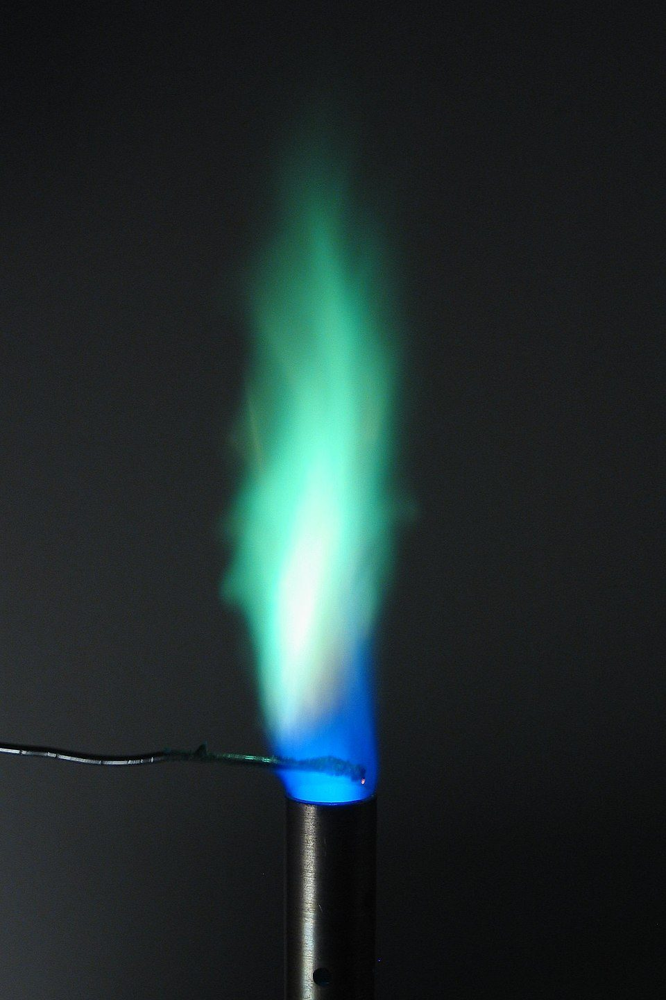
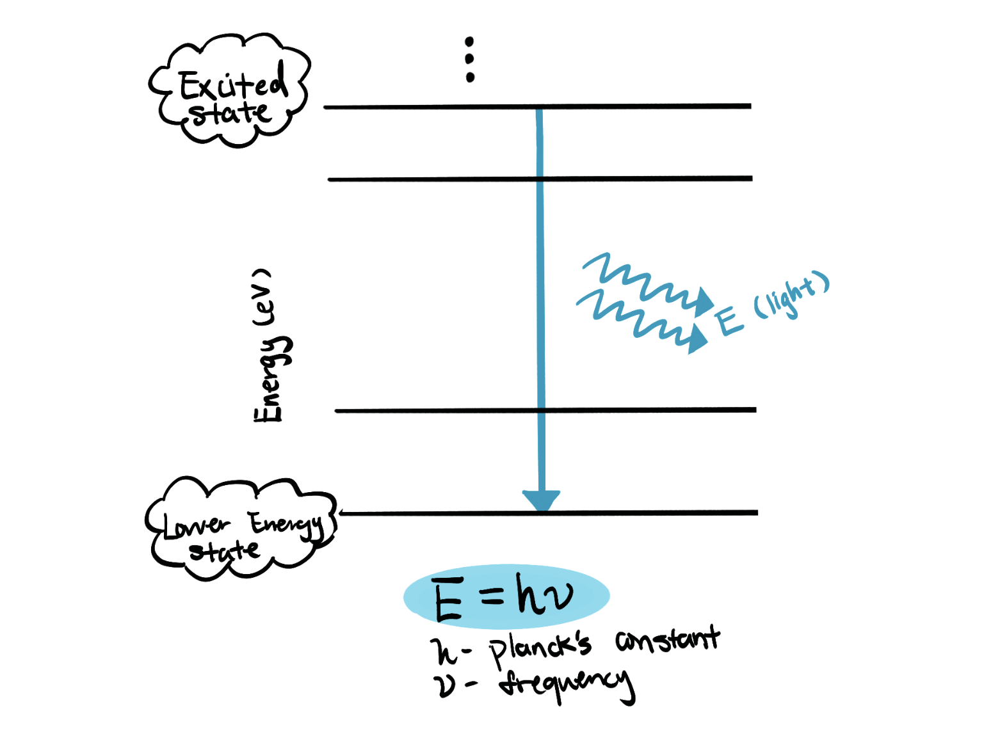
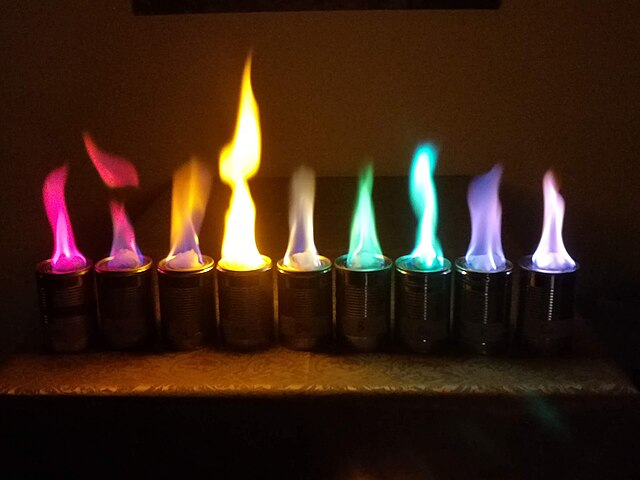

May 24th, 2025
Aurora
Introduction
Have you wondered about why different colors can be seen through human eyes? The flame you see right here is created by burning a special chemical called copper sulfate. Visualize this exciting experiment through your own hands!

Materials
- Beaker (or an equivalent container)
- Solids: Blue: CuSO4 · 5H2O
- Any liquid alcohol
- Matches (or lighter)
Safety Note
- Wear lab safety googles and gloves as some chemicals may be poisonous.
- Be careful when handling the matches or lighters.
- Always be ready to blow out the matches.
Experiment Procedure
- Transfer a small amount of CuSO4 · 5H2O (no specific measurements) into the beaker
- Pour enough liquid ethanol into the beaker to cover over the surface of CuSO4 · 5H2O
- Mix the chemicals in the beaker
- Light a match (or lighter) and light the alcohol (BE CAREFUL)
- Then you will see the results

How Does This Work?
The metal ions in the solid will absorb the heat and go to the excited state from ground state. Since the excited state is in high energy level, the electrons are unstable at high energy. To return to the stable ground state, they emit energy in the form of light of specific wavelengths to create the corresponding color in the visible spectrum for the human eyes. Since some solids, like CuSO4 · 5H2O, are very stable and even inflammable, ethanol is added to facilitate reaction by carrying the metal ions into the flame as it is easily flammable. When ethanol in the beaker runs out, the flame will also die out.
For example, we used CuSO4 · 5H2O, a blue crystal-like solid. Cu+ ions undergoes an excitation, then back to ground state, emitting blue-green light at approximately 510-520 nm.

Future Explorations
You can also try using different solids for the flame test. Some of the prettiest ones can be created using compounds that have potassium (purple), sodium (yellow), lithium (pink), or any alcohol (blue)
